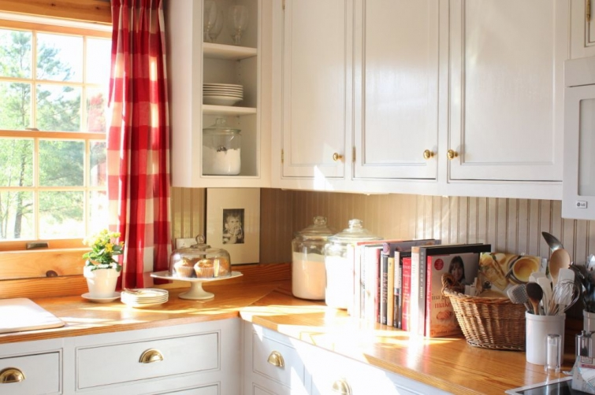

.png)
.PNG)
.PNG)
.PNG)
.PNG)
.PNG)
.JPG)
.JPG)
.PNG)
.PNG)


I hope your Easter Sunday was a beautiful day full of all good things. Our day was a bright spring day with a light breeze blowing. ¬†Just perfect. üôÇ
 In my last post, I showed you the foyer with all its red and yellow Easter attire.  Since then, red and yellow have run rampant through the house.
In my last post, I showed you the foyer with all its red and yellow Easter attire.  Since then, red and yellow have run rampant through the house.
Truly.
 The kitchen has its red buffalo checked drapes back, and spots of yellow have popped up in plants… and cookbooks… and notebooks at the desk.
The kitchen has its red buffalo checked drapes back, and spots of yellow have popped up in plants… and cookbooks… and notebooks at the desk.

The color duo has also invaded the family room.
Red and yellow with chocolate bunnies – such cheerful colors¬†–¬†just for fun on the mantel and atop the cabinet.
(You never know where they’ll show up next.)
And, as if that¬†hasn’t been enough, the colors have taken control of the dining room too…
(Bringing even more bunnies along with them!)
They took over the centerpiece for our Easter lunch.
And they made me buy these yellow bordered plates at Homegoods.
(I just couldn’t resist…They were Kate Spade!)
 If you will look through the door there in the dining room, you will see red and yellow have also played out there on the porch as well.
From the quilt and throw pillows on the sofa, chairs, and swing …
to the plant over the desk…
to the table setting for our Easter dinner (or supper…which ever term you use. üôÇ )
There seems to be red and yellow everywhere here.
But at least my chalkboard is still black and white. üôÇ
It has the message for all of us for Easter.
(and every day!)
The time leading up to Easter is a solemn time, but Easter Sunday is a time for celebration, and the bright cheerful colors are more celebratory to me than pastels would ever be. ¬†So the red and yellow color scheme is going to stick around here for awhile- but the non-chocolate bunnies will go back in the attic until next year. üôÇ
This week of spring break has flown by…3 days of heavy spring cleaning, a day of shopping, 3 days in Orlando with our daughter, a day of getting ready for Easter, and then Easter Sunday itself. ¬†We had a huge meal at lunch with enough leftovers for a repeat of the meal for dinner.

(This photo was taken before the ham was on the table. My cheese strata rose sooooo high in the oven and then deflated when it was taken out. üôÅ )
Strawberry shortcake won out over coconut cake for most everyone.
 So how was your Easter weekend? Did you enjoy time with family and friends?
We’d love to hear about it. üôÇ

I’m linking up with Mary Ann from Classic Casual Home¬†…


.PNG)
PS. Pinned your fab Easter menu!
Thanks for being a part of Best Of the Nest! This is just so pretty AS USUAL! I just go my new issue of BH&G and its all about yellow on the cover. You must be a happy person to be around!
—————————————————————–
Thank YOU for hosting it! Yellow is such a happy color to be around. I couldn’t resist using it. But after seeing some of the blue fabrics you have posted lately, I am craving some blue now.
Kelly
Kelli, red and yellow are such a cheerful and fresh color scheme for Easter, I love how you brought them into your house with all your pretty touches! You are amazing how you can change up your house with color/seasonal and holiday decorating. I always enjoy seeing your tablescapes and creative ideas. Thanks for linking your Easter decor up to Best of the Nest. We were so thrilled to have Mary Ann guest host with us this month. Hope you’ll come and link up again!
———————————————————————
Thank you for doing Best of the Nest, Lisa! I do love the cheerfulness of the color combination for spring, and thank you for your very kind comments! I was glad to see Mary Ann linking up for the linky party too. üôÇ
Kelly
I think red is a really hard color to decorate with in the spring and I think you did a fantastic job. I love how it looks with the yellow! Beautiful tour, love your kitchen! This is my first time visiting from the best of the nest:)
I really like your kitchen counter-tops! They look brand-new! How do you keep them in such good shape with all of the entertaining you do?
Everything looks so fresh and lovely, like a breath of spring air. We are not quite there yet, I saw some snow flurries yesterday but mostly rain these days…. The weatherman promises it will go up into the sixties by the weekend, fingers crossed. We don’t have school vacation until the week after next and then, of course, we go through until the last days of June. Oh boy! That last quarter is such a rush I know your home will be a welcome respite to return to after these end-of-year hectic days. As yellow is my favorite color, I am loving the pops of it I see in your d√©cor.
———————————————————————
Flurries still? Oh my goodness. I can’t imagine going to school until the end of June…but then we did start at the end of July. üôÅ Our state testing starts next week…very stressful. So happy you liked all the yellow in our spring decorating Paula. It is such a happy color!
Kelly
Hi Kelly, I love the red and yellow, always have. In our first home we had harvest gold appliance, and a yellowish counter top. I can’t even blame anyone else, we built the house. What can I say it was the seventies. Anyway, I used red as my accent color, it worked. Just love the way you tie your colors all together, a hint of color here and a pop of color there. Beautiful as always!
How many days left???
———————————————————————
Red does seem to work wonderfully with things that have a yellow tone. So I bet your kitchen was a happy looking space with all that gold and red. üôÇ
32 days to go!
Kelly
I think the yellow and red color scheme looked beautiful for Easter. üôÇ I loved your new yellow bordered plates. They were perfect. I have some yellow Martha Stewart plates from KMart that I have had for years that I always use at Easter. üôÇ We hosted my husband’s large family on Saturday so we relaxed after church and ate mostly leftovers Sunday. üôÇ
——————————————————————
Thank you so much for the compliments on the Easter decorating Gina! Yellow plates do seem to work especially well for Easter. I am glad you were able to have a relaxing Easter Sunday. We are still eating leftovers here!
Kelly
Yessssss!!!!!!!!!!!!!!! This is absolutely beautiful!! I am such a red freak, and you have made this perfection in my eyes. It helps that yellow is my second favorite color :^)
Blessings to you for sharing this and kudos to Gail for the great analogy!!!
Your chalkboard is perfect!!
Blessings to you,
J
————————————————————————-
Wow! Thank you for all the compliments!! I’m so glad you were able to enjoy it all.
Kelly
Kelly, your posts always bring a smile to my face. Red and yellow, spot on! We had a lovely Easter brunch at my sister’s. Our children and their families all spent Easter out of state in warmer weather. So yesterday, my husband and I drove 400+ miles to visit relatives and dear friends in PA. We are going to my first IKEA visit tomorrow. Woohoo!
———————————————————————
Sandy, it sounds like you had a busy but fun weekend! That was a long way to go to visit relatives. Kudos to you! Hope your visit to Ikea was a good one. (Sometimes it can be a little overhwelming to me.)
Kelly
Love the colors! Once again you have made your home beautiful for holidays. I love the bunny in the jar! How cute!! And the chalkboard…love the saying on it! Hope you have a great Easter!
——————————————————————-
Aren’t those colors just so cheerful Jayne? I am glad you liked them for the holiday decorating. We did have a great Easter weekend. I hope you did too.
Kelly
For some reason the whole comment didn’t print. The dishes have a pale yellow rim. After seeing yours, I think I will have to get them out and enjoy them. Hope you had a very blessed Easter.
—————————————————————–
That’s odd…hmmm. Yes, you need to get out those dishes, and use them now in spring Peggy. üôÇ We did have a great Easter. Hope you did too!
Kelly
Oh my! I hate to admit it — dish envy! That pop of sunshine is amazing! I have some old dishes of my Mom’s that she got at the grocery store (IGA) saving stamps. You are too young to know about thing like that.
————————————————————————
I wish I was too young to know about a thing like that. I remember going with my mom to an S&H Greenstamps place to trade in all those little booklets filled with stamps. I think she redeemed them for glasses and other things…but I am not sure. I do know my mother in law redeemed hers for tons of milk glass…little plates and cups and punch bowls and goblets and serving dishes…all of which are stored here.
Kelly
Beautiful!
——————————————————————–
Thank you Barbie!
Kelly
The yellow looks so pretty with the red…especially those baskets of flowers! We had a very nice Easter with two of my sons…and I too spent an intense three days cleaning everything in sight before that. Your home looks so cheerful! üòâ
———————————————————————
Doesn’t it feel good to know that you have that cleaning behind you? I still have the floors in a few rooms to do, but they will have to wait until this weekend. Thank you for the compliments on the rooms and the flowers! I am glad you enjoyed Easter with your sons.
Kelly
Kelly, another beautiful post. You inspired my choice of neutrals and reds…now I may have to add some yellow! How i wish you could just come ‘do’ my house. I could look at your decorated house for hours. Perhaps a book is a possibility?
———————————————————————-
You are too sweet Tricia! Mix in some yellow with your red for some springtime cheer. üôÇ No book possibility here, but I appreciate your encouragement of my decorating abilities!
Kelly
Kelly,
I love the red and yellow. It should be perfect through spring, right? The yellow banded Kate Spade plates are wonderful. I love how the bunnies have multiplied and are in each main room! üôÇ
We had a lovely day as well. Sarah sat the table with the charming Pottery Barn (or were they Williams Sonoma) bunny plates.
xo,
Karen
———————————————————————-
I am glad you liked the color combination Karen. Yes, I think it will work for awhile here. Those plates were a steal at Homegoods, and I wish I had purchased a bunch of the salad plates too! I know Easter with your family was wonderful. Not sure which store her bunny plates came from…either store has had bunny plates. I almost bought the Williams Sonoma yellow banded Easter ones recently. I wonder if they would go with my new dinner plates?
Kelly
Loving the red and yellow together along with your black accents and the neutral background. Hope you had a nice Easter.
——————————————————————-
Thank you Kim. The color combination does work well with all our khaki walls around here. Our Easter was a nice one. Hope yours was as well!
Kelly
Just loving the red with the yellow!! I did get my act together and used the pastel colors in my Lennox spring tablecloth with butterflies/dragonflies and red lady bugs– several times I thought the ladybugs were real and started to swat them!:) enjoyed cooking and baking for 12 — standing bunny cake didn’t quite stand up due to humidity so he was prone on the plate with white frosting and coconut– kinda looked like a sick poodle!:) Had coconut cream pie and individual banana pudding in Mason Jars with handles. Ham and turkey breast in crock pots while we were off to Sunrise Services. Daughters made cute bunny head fruit salad and bunny rolls. Had a giant Easter basket with a ton of chocolate for everyone to make up their own treat bags to take home. Fell into bed at 9:30– was a long day since 4:30 am!! A lovey Easter with family and good friends and g/daughter’s new beau! Hope you are well and getting excited about the last few days of teaching!!
———————————————————————–
Yay! Glad you were able to get everything done. That is too funny about the ladybugs! One landed on my computer the other day, and he/she would not get off it! So sorry your bunny cake didn’t quite make it. I laughed out loud at your sick poodle comment. Hilarious! (Although you were probably aggravated at the cake.) I will have to try the ham in the crock pot idea. How smart! I also love your chocolate bar Easter basket. You’re just full of good ideas!
Go to bed early tonight too. Sounds like you had quite a busy day yesterday.
34 days to go!! State testing next week. üôÇ
Kelly
Kelly,
Your yellow and red theme is so perfect for your Easter decorated home. I do love the Kate Spade plates and the bunny theme you have running through out. Great ideas and beautiful flowers every where. We had a lot going on this Easter weekend also. We went to my in-laws Saturday and then to my parents home Sunday after church. Now we are hanging out at the lake house until Wednesday night. We had Thursday, Friday, today, Tuesday and Wednesday off for Easter break. So today I am catching up on school work, tomorrow we might go do some shopping and then back home to get ready for the short work week. I hope you had some time to relax over your break with all that you had going on. Thanks for sharing. Take care.
———————————————————————
I kind of like your work schedule with your spring break. It gives you two short weeks! I hate you are having to spend your vacation time working on school work, but that seems to be the life of a teacher. üôÅ Thank you for the compliments on the colors scheme and the new plates. The plates are VERY bright! Gives the room a cheery look. üôÇ
Kelly
Kelly I like the yellow and red colors through out your home. Also, I like coconut cake with strawberries üôÇ
———————————————————————-
Thank you Julia! Glad you like it all!
Kelly
I love your new plates Kelly. They are going to be perfect for many occasions. Yellow is just such a happy color. I always love to see your home all holidayed up ~ I have the exact same trouble with the Easter colors, so I usually use green and yellow or green and white. I love the pops of red.
Thanks for sharing with us.
——————————————————————-
You are right, Sue, about the new plates working for many occasions. I can see them being perfect for birthdays, can’t you? Glad you liked them and the house decorated for spring. I normally do yellow and green, but this year I wanted a change. And you know I love red. üôÇ
Kelly
Ah, so pretty! I love it all! I always have to go back through your posts several times to make sure I didn’t miss anything. I love seeing things you have that I have. It is like being able to go shopping at home. (the yellow Easter grass and red and yellow PB pillows) Our Easter weekend was nice. I got to shop with my daughter on Friday, work on projects on Saturday, go to church on Sunday and have lunch at my mother-in-law’s. Will you put the “He is risen” photo on Pinterest so I can pin it to my chalkboard ideas? I think you pinned one last year but I like this one even better.
———————————————————————–
Your weekend does sound very nice. I put the photo on Pinterest, so I hope you can find it and repin it. Thank you for your always sweet compliments on the decorating around here Kathy. I appreciate it!
Kelly
Always beautiful. You are amazingly talented at creating warm and welcoming spaces. Love your home!!
——————————————————————-
You are so sweet to say so. Thank you Talia! I’m so glad you liked all the Easter decorating.
Kelly
Kelly, you always decorate so lovely and a little out of the box with colors because generally you would think pastels. I love your chosen colors of red and yellow, that combination is one of my favorites. My bedroom as a teen were those colors.
I need you to come and really Spring clean my house…I can’t even get up the ambition and you put me to shame with all that you did on Spring break. I guess I should get out of my PJs and start making a plan. lol
———————————————————————
Yay! Another fan of red and yellow! How fun that your bedroom was done in those colors Cheri. üôÇ I’m afraid I can’t do your spring cleaning..at least until I finish here..and then there is the matter of our messy yard. It looks like I might be finished by the time summer rolls around (if I’m lucky!) I am hoping that things like this will be easier once I retire. 34 days to go!
Kelly
Hi Kelly: Loved your bright, sunny Easter post. Especially love the “He is Risen” chalkboard reminder of why we celebrate this wonderful event. The color scheme of red and yellow is spot on. Red for the blood Christ shed and yellow depicting the Sun (yellow) of rightousness who came with healing (physically, spiritually and emotionally) in His wings as stated in Malachi. Loved all the sweet bunnies scattered here and there and definitely want the recipes for the cheese strata (even though it deflated) and asparagus casserole. Both looked delicious! You always have the most inviting looking food. Thank you for sharing your sweet holidays with us! Always inspiring.
Blessings to you and yours.
————————————————————————-
Thank you for explaining the meaning behind the colors Gail. Now I feel it is even more fitting of the special day. I will try to post the recipes in an upcoming Talk of the Weekend post. That cheese strata is easy and good with a lot of things, and the asparagus casserole really is yummy (especially if you are an asparagus lover like I am! üôÇ ) I am happy you enjoyed the post.
Kelly
Who would have thought yellow and red for Easter….of course, it’s Kelly’s house!! It turned out adorable. I love the cute little bunny cups and yellow plates in the dining room. Are the bunny cups from Pottery Barn?? Hmmm… You had wonderful weather and so did we. üôÇ It was a whirlwind weekend here…Started Friday with some Spring outdoor clean up, then, Saturday morning was an egg hunt at a local farm near our home. It was complete with a few farm animals and baby chicks for the twins to enjoy. We then came back to our home for another private egg hunt for the twins in our back yard, followed by egg coloring. Yep, with 3yr old twins. They were so good and what an egg assembly line. They only dropped three eggs! Ha! Oh, well. We finished the afternoon with kite flying. A few tangled children took us to a new daddy and Poppa finally taking over flight control. I think we adults were enjoying it more…. There is something to be said about the serenity of kites soaring above. üôÇ Easter Sunday brought our family gathered for brunch out. It was a bit cool, but sunny in the early morning. It is a country drive to get there, so it was pleasant to see farmsteads ready with there equipment. The food was scrumptious, as always. Family photos with a vintage bunny that always appears, though the twins have still not warmed up to him. The tulips were not in bloom yet, but it was still enjoyable. It was a peaceful afternoon back home. We ended up just doing simple fare for dinner with deviled eggs of course, (had to use those cracked ones.) üôÇ Our traditional lamb cake with fresh strawberries was the dessert. Ugh..calories galore! We have quite a bit of Spring clean up and garden prep with this acre lot of ours, so extra work outs…no problem! We don’t hire in lawn service .. üôÅ Hope your week ahead is pleasant. I just love your home posts, as they always make me feel like I have just been there for a visit. P. S. I think I gained a pound with your post, all that (taking in of the Kelly/jar goodness!)
————————————————————————
Wow Debra! It sounds like you had a very enjoyable Easter weekend. How wonderful with all the children and the egg hunts! We have some spring yard clean up that needs to be done here too.
The bunny cups are actually some kind of little bowl from World Market (maybe in the Asian dish section) and the little bunnies were place card holders from Target.
Have a great spring week!
Kelly
where do u get all ur different colored books?
———————————————————————
Brenda we have just accumulated them from many sources over the years. We are a family of 5, and we are all readers. Most of the books probably have come from amazon.com.
Kelly